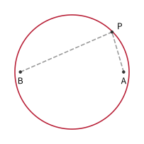
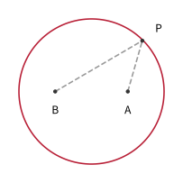
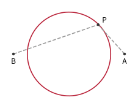

別冊練習問題 7 の解答 2点からの距離の平方の和が一定
(1) 2点 \(A(3,0),\ B(-3,0)\) に対して \(PA^2+PB^2=40\) をみたす点 \(P\) の軌跡を求めよ。
P の座標をおく
\(P(x,y)\)。
\[PA^2+PB^2=(x-3)^2+y^2+(x+3)^2+y^2=2x^2+2y^2+18\]条件
\[2x^2+2y^2+18=40\ \Longrightarrow\ x^2+y^2=11\]

軌跡
原点中心、半径 \(\sqrt{11}\) の円。
【答案】
\[x^2+y^2=11\]答
(2) 2点 \(A(1,0),\ B(-1,0)\) に対して \(PA^2+PB^2=10\) をみたす点 \(P\) の軌跡を求めよ。
P の座標をおく
\(P(x,y)\)。
\[PA^2+PB^2=(x-1)^2+y^2+(x+1)^2+y^2=2x^2+2y^2+2\]条件
\[2x^2+2y^2+2=10\ \Longrightarrow\ x^2+y^2=4\]

軌跡
原点中心、半径 \(2\) の円。
【答案】
\[x^2+y^2=4\]答
(3) 2点 \(A(4,0),\ B(-4,0)\) に対して \(PA^2+PB^2=50\) をみたす点 \(P\) の軌跡を求めよ。
P の座標をおく
\(P(x,y)\)。
\[PA^2+PB^2=(x-4)^2+y^2+(x+4)^2+y^2=2x^2+2y^2+32\]条件
\[2x^2+2y^2+32=50\ \Longrightarrow\ x^2+y^2=9\]

軌跡
原点中心、半径 \(3\) の円。
【答案】
\[x^2+y^2=9\]答